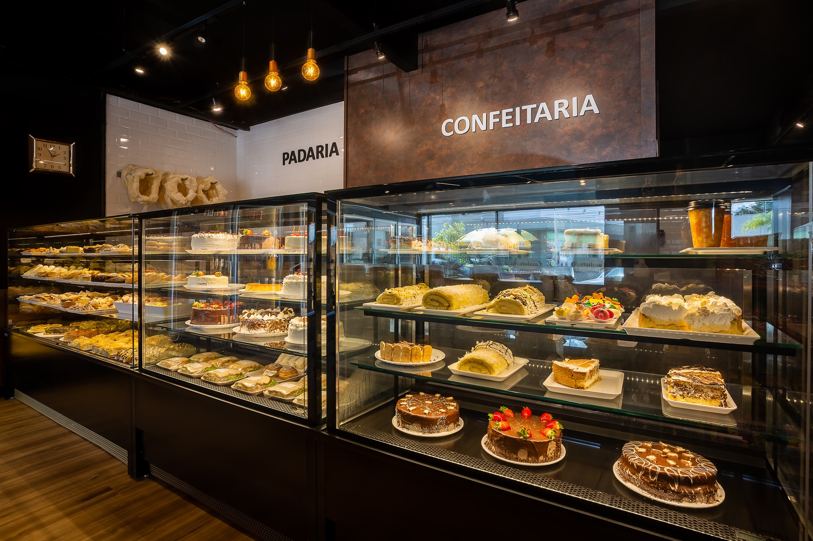

Essa padaria foi aberta em 2021 por um casal que sempre sonhou em ter seu próprio negócio. Eles se especializaram em pães artesanais feitos com ingredientes frescos e de alta qualidade. Com o tempo, a padaria começou a atrair mais clientes devido à qualidade dos produtos e ao atendimento excepcional. Hoje, a padaria é um sucesso e um ponto de encontro para a comunidade local. Os proprietários estão sempre buscando maneiras de melhorar e crescer.